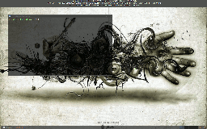

Pancake
Description
Pancake is a free, configurable, modular, themeable, GTK+-2.0-driven panel for X11, licensed under the terms of the GNU General Public License .
I started this project since I was unable to find a panel fulfilling my requirements for a good-looking, simple panel without dependencies to the libraries of those full-blown desktop-environments i don't want to use. There're some panel's around, but they were too minimalistic or too toyish for my taste.
Pancake uses GTK+-2.0 (and libwnck and libconfuse), but don't has dependencies to the GNOME-Libraries or something similar.
Screenshots
Everybody wants to see screenshots before installing a software, so here're some (click on an image to enlarge):

conky,
urxvt, and, at the bottom, an instance of pancake :o)
{kind=link}
OK, this was only one, but if you like pancake and would send me a screenshot of your desktop, i'll add it.
Documentation
Basic documentation is included in the source-tarball in the README/INSTALL-files. It should be enough to get a point to start with.
To get help with the configuration-file, just run 'pancake -d' or have a look in the pancakerc-file shipped with the program.
If you want to write new modules, I have to acknowledge there isn't much documentation for this kind of stuff around yet. But here's what we have: The sourcecode contains comments to create doxygen-documentation and in the source-tarball some modules are included. The clock- and defaulttheme-modules should be some fine examples how a module works. And if you've got any questions, don't be shy to write me a mail.
And watch out -- we're at version 0.1 at the moment, and the the module-API is far away from being treated as stable.
Files
You're willing to give pancake a try?
Here you can download the latest Release.
The current version is 0.1, but already everyday-useable, I think.
You may also clone the latest source from the git-repository at git://failedprojects.de/pancake or browse the repository per http
Changelog
- Mon Jun 15: Initial release of pancake (Version 0.1)
Contact
For suggestions, praise, critics, or anything else you can contact me per mail at simon.schoenfeld@web.de or write a ticket.